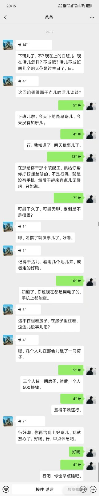
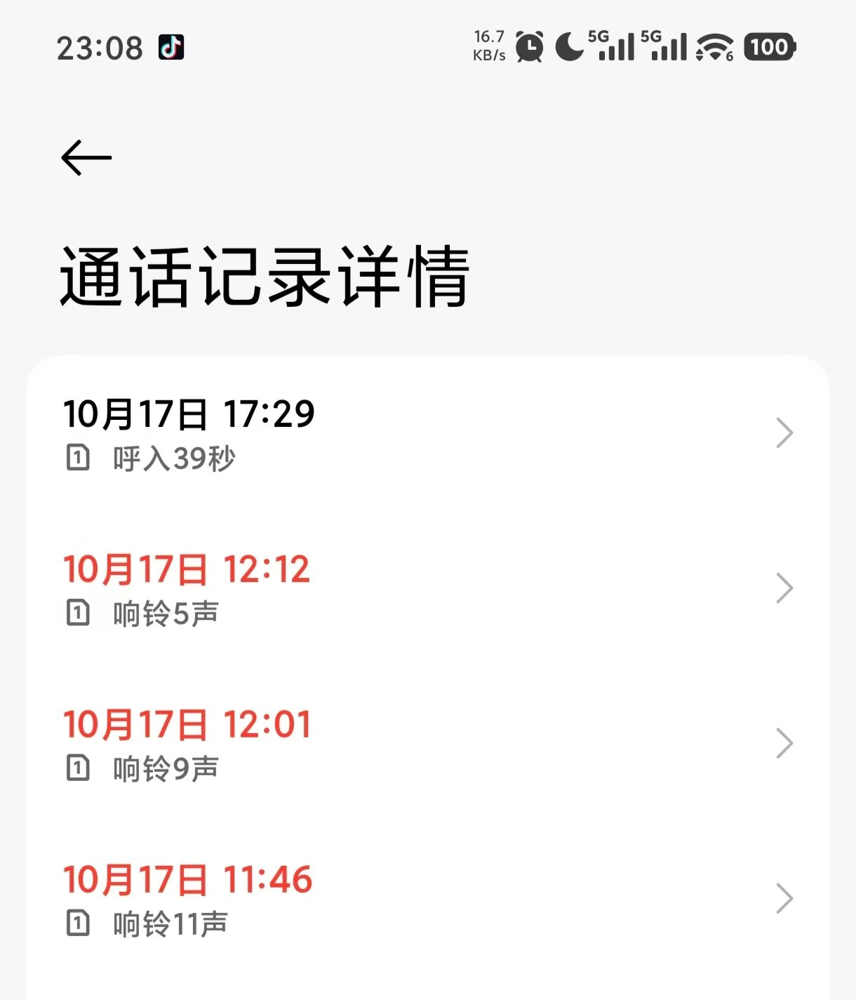
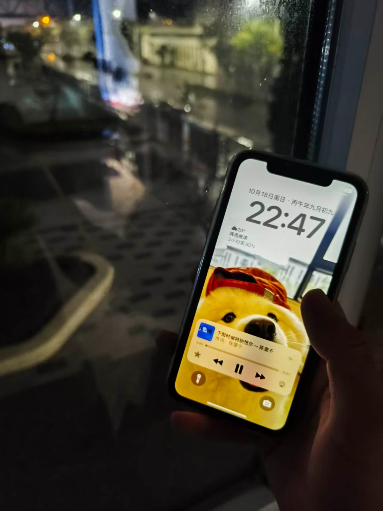

生日快乐！别哭，你很棒！
2026.10.18 其实10.17是我的生日（农历）
停更原因：上班后太累了，加上每周要学习专升本加编程，导致腾不出时间或者说想写因为各种各样的原因停了。 17号是我的生日（农历），我其实猜到了家里会在这时候关心我，我其实在想我会不会感动哭，之前上大学的时候突然收到爸爸的生日关心，当时感动的流眼泪。 我记得我之前思想还没有成熟的时候（学到了一个词汇，”受害者思维“，当时高中想不开的时候就是这个思维），觉得家里不关心自己，羡慕别人那样过着自己的生日，有纪念意义一天，所以后面上大学的时候给自己过生日买蛋糕弥补自己，逆反也有，我就过的阳历的生日，不过家里的阴历（农历），现在随着逐渐的学习，也逐渐看开了。而真当在生日前一天收到爸爸的关心时还是哭了，只不过室友在身边，我忍了忍流了眼泪，就尽力的憋回去。在昨天，也就是生日当天，因为在上班所以拿到手机时下班的时候，看到奶奶11点多打的电话，我就知道是在关心，也看到了爸爸发的微信，我回了爸爸的微信，并和室友一起回宿舍，在回宿舍的路上我接到奶奶的电话，我知道是爸爸告诉奶奶的，在之前刚来的时候我还表现得很不适应，他们担心，“吃的什么好吃的”，他们知道我今天生日，我肯定不会亏待自己，所以用了这个开头，我说“和室友一块回公寓，吃的公司饭。””行，行。“，奶奶能从我的语气听出我不再想之前那么差了，她放心了。我本想回问他们咋样，电话挂了。我有点意外，没想到挂这么快，但我也突然放心了，因为他们可能不用很特别的担心我了。 之后回到公寓，拍了几张照片，接着学习编程和之后怎么办。emmmmm，很平常的一天，应该是吧。 我其实在前几天也有话说，准备写日记但第二天还要上班，没抽出来时间写。不得不承认一直上班转移我的注意力加上和别人一起住，使我不再像之前那样特别的攻心。 但我偶然还是会失落。 我这个人总是在遇到事情时感到悲观，我不知道为什么。前段时间车间领取工具，我就持悲观态度，认为领取工具之后要是丢了离职会麻烦，所以持悲观态度。明天我还要去别的车间支援，我们车间没活了，我以为我可以开始下五点的班，可事实是我去支援，我可能得加班，乃至十点。我好伤心，后面在跟gjw聊天的时候了解到，他之前干活支援的人是因为他们车间没活，他本来能磨好几天的活被他们抢着干，我突然一想，我去支援别的车间说不定也是呢。我不确定，所以我想反正去了混就行了。看开点。现在我也不在想那么多，混一混下班学一学，下班晚就睡觉。哎，就是我这个人焦虑，怕学专升本学的少，不能把注意力放在当前。张家硕你得多练练，加油！ 想找个能倾诉的人，想找个对象。



· 完 ·
写于 2026.10.18 23:12